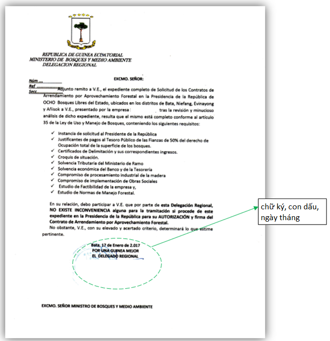
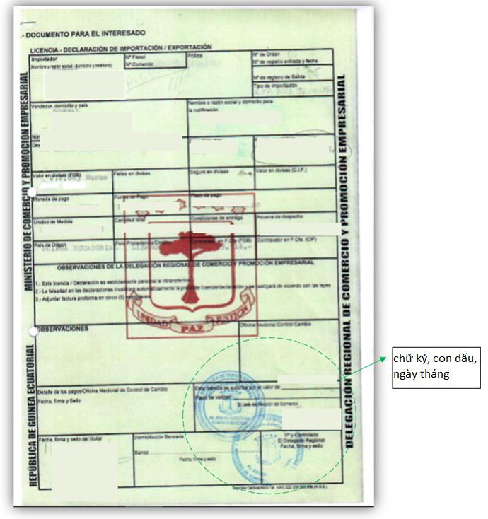
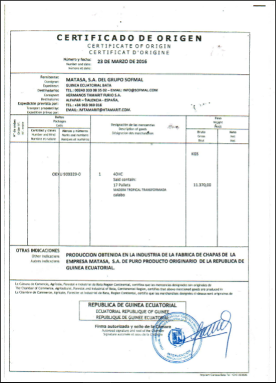

Implementing Timber Leglity Assurance Systems
A guide to comply with timber legality requirements in Cameroon and to support due diligence

GUINEA
Quy định gỗ hợp pháp của Guinea Xích đạo
Guinea Xích đạo chưa tham gia đàm phán Hiệp định Đối tác Tự nguyện với Liên minh Châu u. Hệ thống bảo đảm tính hợp pháp của gỗ chưa được phát triển tại quốc gia này và có nhiều rủi ro xác định cho nhà nhập khẩu gỗ. Việc tuân thủ luật pháp quốc gia và giúp ngăn chặn việc nhập khẩu gỗ bất hợp pháp vào các quốc gia khác phụ thuộc nhiều vào việc Chính phủ phát triển một hệ thống kiểm soát và xác minh hiệu quả, các nhà điều hành tuân thủ các quy định pháp luật và tiến hành trách nhiệm giải trình. Bằng cách nhận thức được các quy định pháp luật ở Guinea Xích đạo được nêu rõ dưới đây, các cơ quan thực thi pháp luật và các nhà nhập khẩu có thể thực hiện các biện pháp kiểm soát và giảm thiểu rủi ro để ngăn chặn gỗ bị khai thác, vận chuyển và buôn bán bất hợp pháp từ Guinea Xích đạo. Các nhà nhập khẩu và cơ quan xác minh có thể tham khảo hoặc sử dụng thông tin này trong việc thực hiện trách nhiệm giải trình.
Gợi ý xây dựng và thực hiện trách nhiệm giải trình cho các nhà nhập khẩu
Trách nhiệm giải trình là gì?

Phát triển hệ thống trách nhiệm giải trình
Thực hiện trách nhiệm giải trình
Các tài liệu sau đây được chọn theo định nghĩa gỗ hợp pháp của Guinea Xích đạo và/ hoặc các quy định pháp luật trong các giai đoạn khác nhau của chuỗi cung ứng.
Giấy chứng nhận đăng ký kinh doanh

Giấy chứng nhận đăng ký kinh doanh phải do Bộ Tài chính, Kinh tế và Kế hoạch ký và đóng dấu xác minh công ty khai thác và chế biến gỗ đáp ứng tất cả các yêu cầu về hoạt động khai thác, chế biến. Cần kiểm tra chữ ký, con dấu, ngày hiệu lực trên giấy chứng nhận. (Tên tài liệu gốc: Certificado de registro de empresas (N.I.F.)/ Giấy chứng nhận đăng ký kinh doanh (Mã số thuế)).
Giấy chứng nhận doanh nghiệp
Giấy chứng nhận doanh nghiệp được cấp cho công ty khai thác gỗ và chế biến sản phẩm gỗ phải do Thủ tướng Chính phủ ký. Cần kiểm tra chữ ký, con dấu, ngày hiệu lực trên giấy chứng nhận. (Tên tài liệu gốc: Certificado de acta de registro de promocion empresarial (P.E.)/ Giấy chứng nhận doanh nghiệp).
Thỏa thuận cho thuê rừng (Contratos de Arrendamiento por Aprovechamiento Forestal - CAAF) (đối với rừng quốc gia)
Thỏa thuận cho thuê hoạt động khai thác gỗ được cấp cho công ty phải do Tổng thống ký. Cần kiểm tra các thông tin trên hợp đồng, chữ ký và con dấu, ngày hiệu lực, các hồ sơ kèm theo thỏa thuận này như giấy phép khai thác, chứng chỉ đo đạc.
Giấy phép cắt (đốn hạ) gỗ
Giấy phép cắt (đốn hạ) gỗ được cấp cho tổ chức/ công ty có thỏa thuận cho thuê rừng tại địa điểm khai thác gỗ phải do Bộ Nông nghiệp, Chăn nuôi, Rừng và Môi trường (Ministerio de Agricultura, Ganadería, Bosques y Medio Ambiente - MAGBMA) ký. Cần kiểm tra chữ ký và con dấu, ngày hiệu lực trên giấy phép này.
Chứng chỉ đo lường
Chứng chỉ đo lường áp dụng cho thuê khai thác gỗ phải do tổ chức/ công ty được cấp cho thuê khai thác gỗ thực hiện. Cần kiểm tra chữ ký và con dấu của các bên, ngày hiệu lực trên chứng chỉ đo lường.
Tuyên bố khả năng nộp thuế
Tuyên bố khả năng nộp thuế phải do Đại diện khu vực của Bộ Nông nghiệp, Chăn nuôi, Rừng và Môi trường ký. Cần kiểm tra chữ ký và con dấu, ngày hiệu lực trên bản tuyên bố.
Giấy phép vận chuyển
Giấy phép vận chuyển áp dụng cho vận chuyển sản phẩm gỗ được khai thác được cấp cho công ty vận chuyển gỗ phải do Đại diện khu vực của Bộ Lâm nghiệp ký. Cần kiểm tra chữ ký và con dấu, ngày hiệu lực trên giấy phép vận chuyển.
Giấy phép giao hàng
Giấy phép giao hàng áp dụng cho xuất khẩu lâm sản phải do Đại diện khu vực của Bộ Nông nghiệp, Chăn nuôi, Rừng và Môi trường ký. Cần kiểm tra chữ ký và con dấu, ngày hiệu lực trên giấy phép giao hàng.
Giấy phép xuất khẩu
Giấy phép xuất khẩu được cấp cho công ty chế biến gỗ phải do Đại diện khu vực của Bộ Thương mại và Cơ quan Xúc tiến Doanh nghiệp vừa và nhỏ (Delegacion regional de comercio y Promocion empresarial) ký. Cần kiểm tra chữ ký, con dấu, ngày hiệu lực, ảnh của người đại diện công ty trên giấy phép. (Tên tài liệu gốc: Licencia – Declaracion de importacion /Exportacion/ Giấy phép – Tờ khai xuất/ nhập khẩu).
Giấy chứng nhận xuất xứ và tính hợp pháp
Giấy chứng nhận xuất xứ và tính hợp pháp phải do Kiểm toán viên của Phòng Thương mại, Nông nghiệp, Lâm nghiệp và Công nghiệp ký cho nhà xuất khẩu sản phẩm gỗ. Cần kiểm tra chữ ký và con dấu đúng thẩm quyền.
Giấy chứng nhận đầu vào
Giấy chứng nhận đầu vào được cấp cho công ty chế biến gỗ phải do đại diện khu vực Bộ Công nghiệp và Năng lượng ký. Cần kiểm tra chữ ký, con dấu, ngày hiệu lực trên giấy chứng nhận. (Tên tài liệu gốc: Certificado de acta de registro de promocion empresarial (P.E.)/ Giấy chứng nhận doanh nghiệp).
Thỏa thuận chế biến công nghiệp
Thỏa thuận chế biến công nghiệp phải do đại diện khu vực của Bộ Nông nghiệp, Chăn nuôi, Rừng và Môi trường ký. Cần kiểm tra chữ ký, con dấu đúng thẩm quyền, ngày hiệu lực trên bản thỏa thuận.
Hợp đồng lao động
Hợp đồng lao động phải do công ty đang khai thác tài nguyên rừng lập ra và có chữ ký của cả người đại diện và người lao động. Cần kiểm tra hợp đồng có đăng ký với Bộ Lao động, thông tin và con dấu đầy đủ, chính xác.